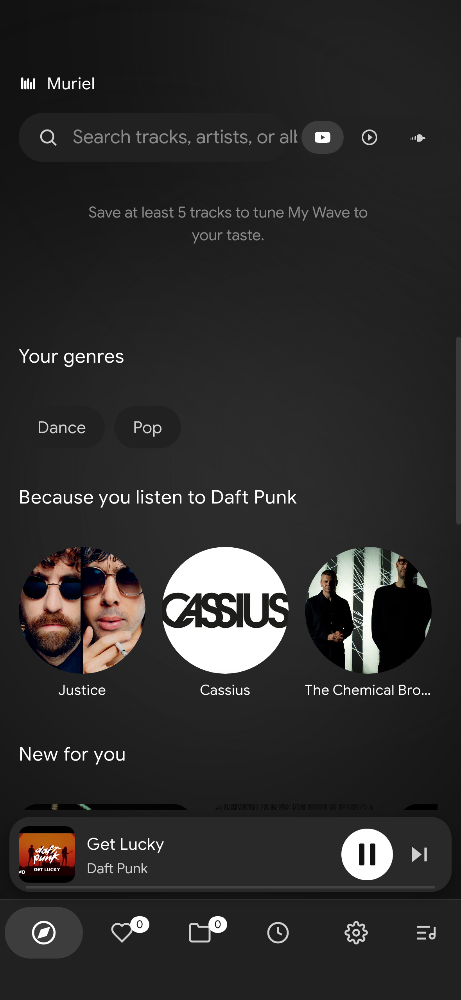
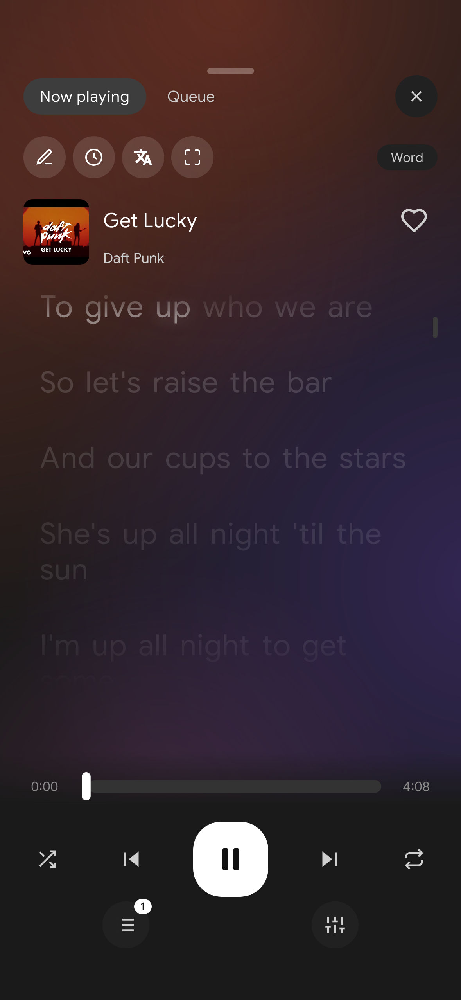
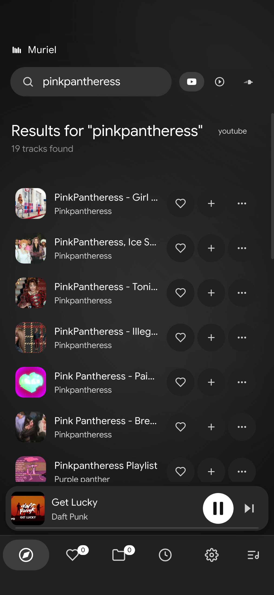

Muriel is a free music player for iPhone, Android and Windows. Stream from YouTube, YouTube Music and SoundCloud, sing along with synced lyrics and keep songs offline.


Built on Riff, tuned for phones, and light enough to keep running in the background.
Search all three and play anything. No premium, no limits on skips.
Word-by-word karaoke, translation, and a fullscreen sing-along mode.
Songs you play are kept on your phone, so they keep working on the train or in airplane mode.
Recommendations from your genres and similar artists, right on the home screen.
Make playlists or import them from Spotify, YouTube, YT Music and SoundCloud links.
Keeps playing with the screen off, with controls on your lock screen.
Smooth animations, colours from the cover, and a player you can swipe through.

Always the newest build, straight from GitHub.
Or install with a desktop shortcut in PowerShell:
$ProgressPreference='SilentlyContinue'; $p="$env:LOCALAPPDATA\Programs\Muriel"; ni -ItemType Directory -Force $p | Out-Null; iwr https://github.com/cloverscripts/riff-muriel/releases/download/windows-latest/Muriel.exe -OutFile "$p\Muriel.exe"; Unblock-File "$p\Muriel.exe"; $s=(New-Object -ComObject WScript.Shell).CreateShortcut("$([Environment]::GetFolderPath('Desktop'))\Muriel.lnk"); $s.TargetPath="$p\Muriel.exe"; $s.IconLocation="$p\Muriel.exe,0"; $s.Save()No SideStore? Install the .ipa with Sideloadly from your PC. iPhones only run signed apps, so one of these is needed.
Yes. No ads, no account, no subscription. It's open source and based on Riff by rootscripts (MIT).
iOS only runs apps signed with a certificate from Apple. Muriel doesn't use leaked certificates (those get revoked and can push anything to your phone), so on iPhone it installs through SideStore or Sideloadly with your own Apple ID.
Apps signed with a free Apple ID expire after 7 days. SideStore refreshes them automatically on your phone; with Sideloadly, just install again.
Yes, on iPhone and Android, with play/pause/skip on the lock screen.
Inside Muriel (Library → Offline). On iPhone they're also in the Files app under Muriel.